Visual Atelier — Jerusalem · Tel Aviv
Nick Dreyden
Visual Artist · Multimedia Director
My team creates bold theatrical and multimedia experiences that merge performance, visual art, and cutting-edge technology.
Selected works · 2022–2026
162026
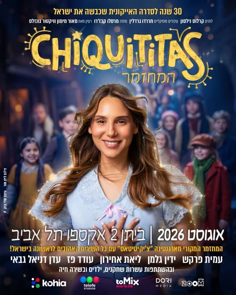
Chiquititas / Ktantanot toMix · Expo Tel Aviv, Israel / Buenos Aires, Argentina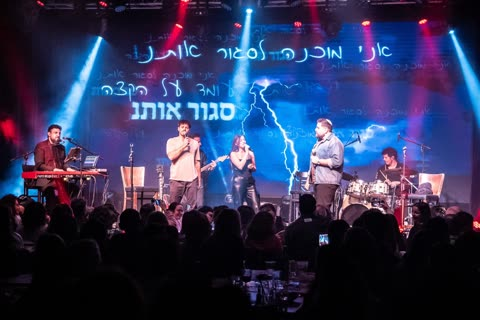
Noam Horev — Live Concert season · Israel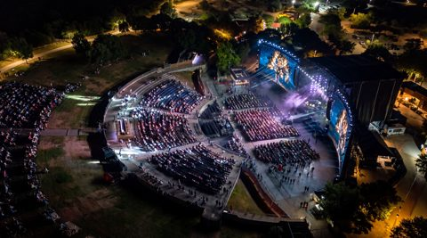
Brothers for Life — 18 Years Live Park Rishon LeZion, Israel2025
 Imagine Festigal
Solan Productions · Israel
Imagine Festigal
Solan Productions · Israel
 Frau Marlene Show
Tmuna Theatre, Tel Aviv, Israel
Frau Marlene Show
Tmuna Theatre, Tel Aviv, Israel
 The Seagull
Beit Zvi · Ramat Gan, Israel
The Seagull
Beit Zvi · Ramat Gan, Israel
 Seret Kayitz
Orna Porat Theatre, Tel Aviv, Israel
Seret Kayitz
Orna Porat Theatre, Tel Aviv, Israel
 Beyond the Light
Gesher Theatre, Tel Aviv, Israel
Beyond the Light
Gesher Theatre, Tel Aviv, Israel
 Tze'irei Tel Aviv — Lo Kolel Shirut
Heichal HaTarbut, Tel Aviv, Israel
Tze'irei Tel Aviv — Lo Kolel Shirut
Heichal HaTarbut, Tel Aviv, Israel
2024
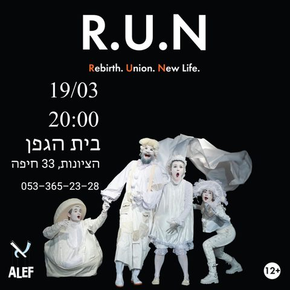
R.U.N. Alef Theatre · Haifa, Israel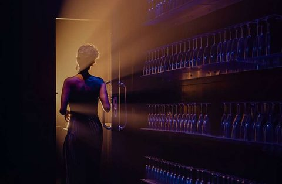
Julie Habima National Theatre, Tel Aviv, Israel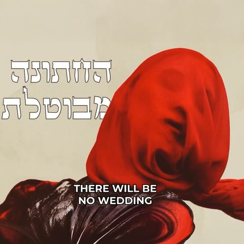
There Will Be No Wedding Gesher & Fulcro, Tel Aviv, Israel2023
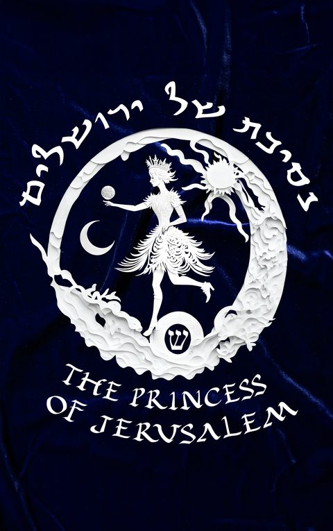
The Jerusalem Princess ANU Museum, Tel Aviv, Israel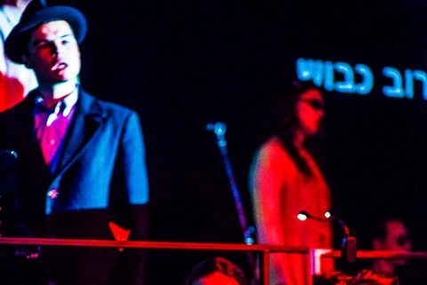
Third Cabaret: The Burning Bush Gesher / Fulcro, Tel Aviv, Israel2022
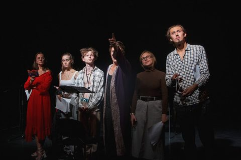
Free Fall Malenky Theatre, Tel Aviv, Israel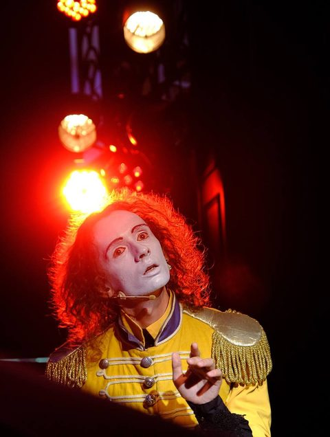
Dead Time / Tempus Mortuus Jaffa Fest / Gesher, Tel Aviv, Israel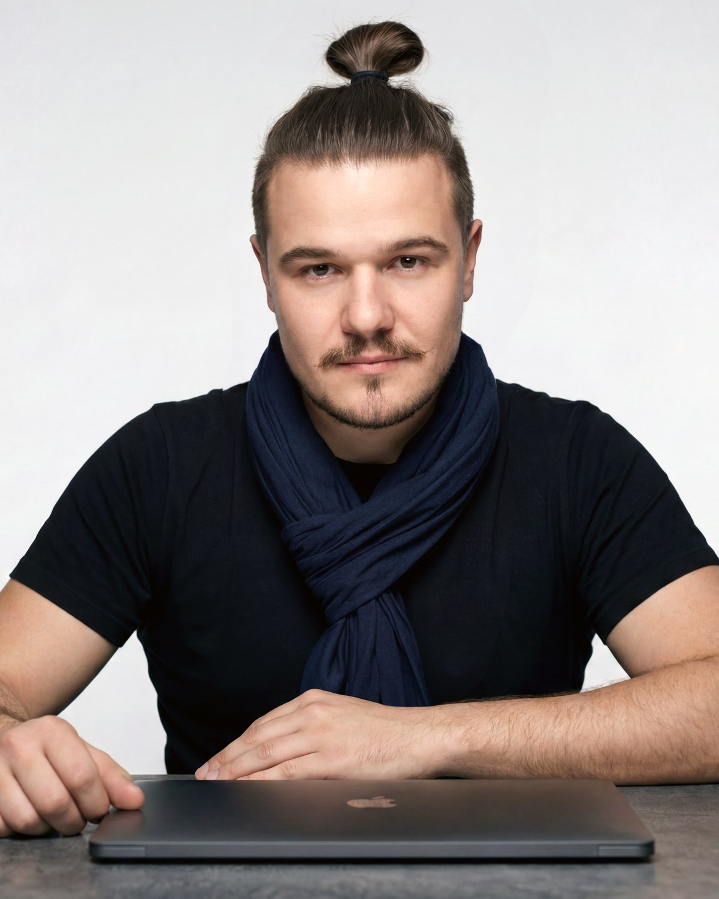
About
Nick Dreyden is a Visual Artist and Multimedia Director based in Israel. His work bridges theater, film, multimedia installations, and commercial projects, blending strong visual storytelling with cutting-edge technology. Before moving to Israel, he had already established himself in Russia and Europe as a multi-awarded multimedia and theater director, with more than 20 years of extensive experience across stage, film, and commercial work.
Since making aliyah in 2022, he has collaborated with leading Israeli theaters and institutions, including Solan, toMix, Gesher, Habima National Theatre, Orna Porat Theater for Children and Youth, Tmuna Theatre, and Beit Zvi School of Performing Arts Theater. He is also involved in major national productions such as Tze'irei Tel Aviv, Brothers for Life, and the iconic Festigal.
Stage projects such as Imagine Festigal, Tze'irei Tel Aviv (Lo Kolel Shirut), Chiquititas, Brothers for Life 18, Julie, Third Cabaret, Seret Kayitz, and There Will Be No Wedding highlight his signature integration of live performance, immersive scenography, video art, and hands-on programming at every level.
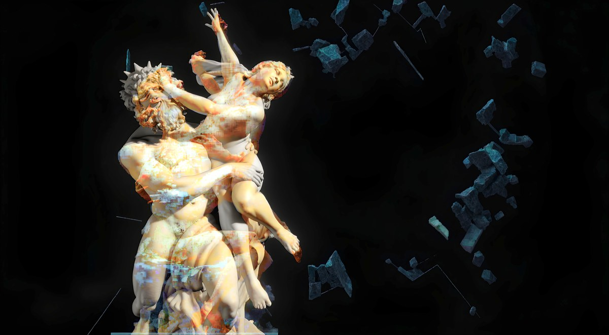
“To create means to resist: resist forgetfulness, resist digital flattening, resist fear. My task is to find new languages that allow the stage — and the screen — to try to tell the truth again. And to understand, at all, what truth means now.”
A child of wars — and the grandson of a renowned artist repressed in the Soviet Union — Dreyden works at the intersection of art and art-mainstream, searching for a new poetics of digital sincerity. That biography is not decoration either: it is the reason his work carries an explicit civic and anti-war position, and why the tools he builds are always aimed at it. AI scenography on unique custom-crafted models, neural-network frescoes, real-time cameras, volumetric 180° environments, kinetic projection mapping — none of it exists for spectacle. Each acts as an independent performer within the piece, put to work on what the century keeps trying to make unspeakable: violence, displacement, memory, and the stubborn human refusal to look away.
Awards
- Message 2 ManSaint-Petersburg2005
- Window to EuropeVyborg2008
- Radiant AngelMoscow2009
- The Bronze HorsemanSaint-Petersburg2009
- Golden SofitSaint-Petersburg2010